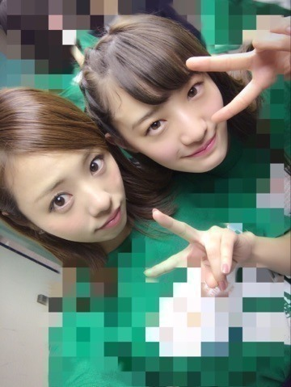
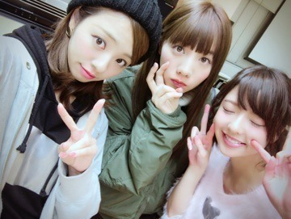
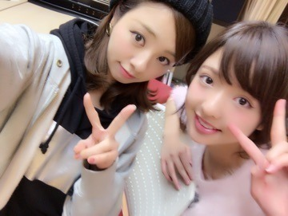

こんにちわ♡
気持ちいね...
武道館って 気持ちいいね。
ろってぃーだよー。

武道館でも，『1.2.3.4.GOー☆ろってぃー』ばっっっちり聞こえたよ！
というかさ♡ 「どこまで聞こえんのー(´∀｀)」って位だったよぉ。
嬉しかった、本当にありがとう♡♡
ライブ前の最高の声出しですね‼︎
そしてそして昨日のLIVEはとんでもなく熱い熱いLIVEだった．最高でした！
でもさ。。。
明日のLIVEはもっとヤバいLIVEになるんじゃないかな？って、、
アンダー初、ぃゃ、乃木坂初の何かが...
まぁさ♡ まだ秘密だけどーーーー╰(*´︶`*)╯♡♡
あっ！そーだ、ファンの方達にアドバイスをもらったもんだから言うねー、私のサイリウムカラーは『赤×白』だよーー(´∀｀)(´∀｀)
よろしくねぇ♡

明日もよろしくね！
